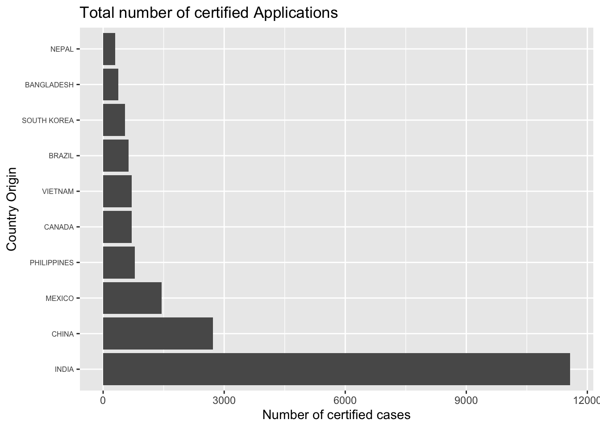
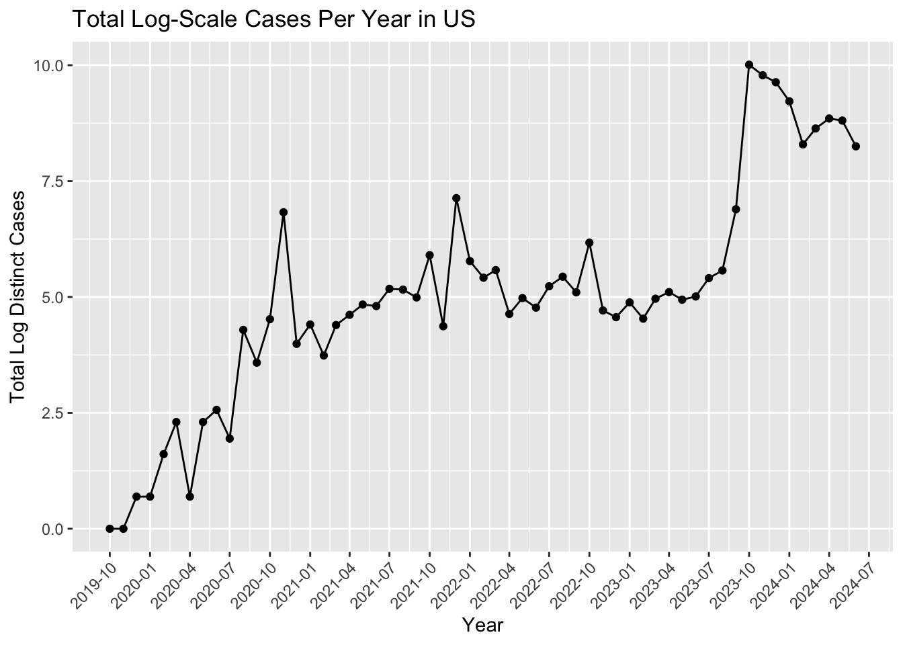

CASE_NUMBER CASE_STATUS RECEIVED_DATE DECISION_DATE
1 I-200-19297-106681 Certified - Withdrawn 2019-10-24 2023-11-01
2 I-200-19319-148860 Certified - Withdrawn 2019-11-15 2023-10-20
3 I-200-19319-148860 Certified - Withdrawn 2019-11-15 2023-10-20
4 I-200-19319-148860 Certified - Withdrawn 2019-11-15 2023-10-20
5 I-200-19319-149308 Certified - Withdrawn 2019-11-15 2023-10-05
6 I-200-19323-154281 Certified - Withdrawn 2019-11-19 2023-10-02
VISA_CLASS JOB_TITLE FULL_TIME_POSITION BEGIN_DATE END_DATE
1 H-1B Research Scientist I Y 2019-10-24 2022-10-23
2 H-1B Software Developer Y 2019-12-01 2022-11-30
3 H-1B Software Developer Y 2019-12-01 2022-11-30
4 H-1B Software Developer Y 2019-12-01 2022-11-30
5 H-1B Software Developer Y 2019-11-18 2022-11-17
6 H-1B SENIOR SOFTWARE ENGINEER Y 2020-05-16 2023-05-15
EMPLOYER_NAME EMPLOYER_STATE AGENT_REPRESENTING_EMPLOYER
1 Georgia Institute of Technology GA No
2 TRISHULLA, LLC WI Yes
3 TRISHULLA, LLC WI Yes
4 TRISHULLA, LLC WI Yes
5 INTERNATIONAL SOFTWARE SYSTEMS INC MD No
6 UBER TECHNOLOGIES, INC. CA Yes
WORKSITE_WORKERS SECONDARY_ENTITY SECONDARY_ENTITY_BUSINESS_NAME
1 1 N <NA>
2 1 Y Acuity Eyecare Group
3 1 N <NA>
4 1 N <NA>
5 1 N <NA>
6 1 N <NA>
WORKSITE_ADDRESS1 WORKSITE_ADDRESS2 WORKSITE_CITY
1 313 Ferst Drive <NA> Atlanta
2 4835 Lyndon B Johnson Fwy, Suite 850 <NA> Dallas
3 6629 UNIVERSITY AVE, SUITE 210 <NA> MIDDLETON
4 8383 Greenway Blvd., Suite 600 <NA> Middleton
5 7337 Hanover Parkway Suite A Greenbelt
6 1455 MARKET STREET 4TH FLOOR SAN FRANCISCO
WORKSITE_COUNTY WORKSITE_STATE WORKSITE_POSTAL_CODE WAGE_RATE_OF_PAY_FROM
1 FULTON GEORGIA 30332 52100
2 DALLAS TEXAS 75244 77605
3 DANE WISCONSIN 53562 77605
4 DANE WISCONSIN 53562 77605
5 PRINCE GEORGE'S MARYLAND 20770 76000
6 SAN FRANCISCO CALIFORNIA 94103 202442
WAGE_RATE_OF_PAY_TO WAGE_UNIT_OF_PAY PREVAILING_WAGE PW_UNIT_OF_PAY
1 NA Year 46821 Year
2 77700 Year 77605 Year
3 77700 Year 65458 Year
4 77700 Year 65458 Year
5 NA Year 75712 Year
6 NA Year 168958 Year
PW_TRACKING_NUMBER PW_WAGE_LEVEL PW_OES_YEAR PW_OTHER_SOURCE
1 <NA> I 7/1/2019 - 6/30/2020 <NA>
2 <NA> I 7/1/2019 - 6/30/2020 <NA>
3 <NA> I 7/1/2019 - 6/30/2020 <NA>
4 <NA> I 7/1/2019 - 6/30/2020 <NA>
5 <NA> I 7/1/2019 - 6/30/2020 <NA>
6 <NA> IV 7/1/2019 - 6/30/2020 <NA>
PW_OTHER_YEAR PW_SURVEY_PUBLISHER PW_SURVEY_NAME APPX_A_NO_OF_EXEMPT_WORKERS
1 NA <NA> <NA> NA
2 NA <NA> <NA> NA
3 NA <NA> <NA> NA
4 NA <NA> <NA> NA
5 NA <NA> <NA> NA
6 NA <NA> <NA> NA
APPX_A_NAME_OF_INSTITUTION APPX_A_FIELD_OF_STUDY APPX_A_DATE_OF_DEGREE
1 <NA> <NA> <NA>
2 <NA> <NA> <NA>
3 <NA> <NA> <NA>
4 <NA> <NA> <NA>
5 <NA> <NA> <NA>
6 <NA> <NA> <NA>
country_df <- final_perm_df |>group_by(COUNTRY_OF_CITIZENSHIP) |>summarise(total_country =n(),Approved_Applications =sum(CASE_STATUS =="Certified") )# Sort by total countrycountry_data_sorted_applicants <- country_df %>%arrange(desc(total_country))top_country <- country_data_sorted_applicants |>top_n(10, total_country)# visualizing# Plot for Total countryggplot(top_country, aes(x =reorder(COUNTRY_OF_CITIZENSHIP, -total_country), y = total_country)) +geom_bar(stat ="identity") +theme(axis.text.y =element_text(size =6)) +# Smaller text size for stateslabs(title ="Total number of certified Applications", x ="Country Origin", y ="Number of certified cases") +coord_flip() # Flips the coordinates to make labels readable

we see a same relationship from dataset2, we have majority of the H1B workers coming from the following country. India is the top population of H1B worker.
# loading merge_df to visualize number applications vs yearsfinal_df <-readRDS("dataset/final_merge.rds")final_df$YEAR_BEGIN =as.integer(substr(final_df$BEGIN_DATE, 1, 4))final_df$MONTH_BEGIN =month(final_df$BEGIN_DATE)final_df$DAY_BEGIN =day(final_df$BEGIN_DATE)
`summarise()` has grouped output by 'YEAR_BEGIN'. You can override using the
`.groups` argument.
# Creating a new combined column for plottingsummary_data$YearMonth <-as.Date(paste(summary_data$YEAR_BEGIN, summary_data$MONTH_BEGIN, "01", sep="-"))# Plotting the dataggplot(summary_data, aes(x = YearMonth, y =log(total_cases) )) +geom_line() +# Use geom_line() for line plotgeom_point() +# Adding points to the line plotscale_x_date(date_breaks ="3 months", date_labels ="%Y-%m") +labs(title ="Total Log-Scale Cases Per Year in US",x ="Year",y ="Total Log Distinct Cases") +theme(axis.text.x =element_text(angle =45, hjust =1))

This plot is showing employees actually getting hired and start employment. For instance, 2024-07 is into the future and it means: the beginning date of period of employment.
It might be interesting to explore policies or recall a news called massive hire during covid period. 2022 - 2023.
Let’s try to do the same for older years when Trump got elected.
`summarise()` has grouped output by 'YEAR_BEGIN'. You can override using the
`.groups` argument.
# Creating a new combined column for plottingsummary_data$YearMonth <-as.Date(paste(summary_data$YEAR_BEGIN, summary_data$MONTH_BEGIN, "01", sep="-"))# Plotting the dataggplot(summary_data, aes(x = YearMonth, y =log(total_cases) )) +geom_line() +# Use geom_line() for line plotgeom_point() +# Adding points to the line plotscale_x_date(date_breaks ="6 months", date_labels ="%Y-%m") +labs(title ="Total Log-Scale Cases Per Year in US",x ="Year",y ="Total Log Distinct Cases") +theme(axis.text.x =element_text(angle =45, hjust =1))
# Split data into training and testing setsset.seed(123)data_split <-initial_split(final_perm_df, prop =0.8)train_data <-training(data_split)test_data <-testing(data_split)# Create a recipe for preprocessingrecipe <-recipe(WAGE_OFFER_FROM ~ WORKSITE_STATE + PW_SKILL_LEVEL + MINIMUM_EDUCATION + REQUIRED_EXPERIENCE, data = train_data) %>%step_dummy(all_nominal(), -all_outcomes()) %>%step_zv(all_predictors())# Create a model specificationmodel_spec <-linear_reg() %>%set_engine("lm") %>%set_mode("regression")# Bundle the recipe and model spec in a workflowworkflow <-workflow() %>%add_recipe(recipe) %>%add_model(model_spec)# Fit the modelfitted_model <-fit(workflow, data = train_data)
# Extract model coefficients and sort by absolute valueimportance <-tidy(model_fit$fit) %>%filter(term !="(Intercept)") %>%arrange(desc(abs(estimate)))print(importance)
# Set up cross-validationcv_folds <-vfold_cv(train_data, v =5)# Fit and evaluate the model across foldscv_results <-fit_resamples( workflow,resamples = cv_folds,metrics =metric_set(rmse, rsq))
→ A | warning: ! There are new levels in a factor: NA
There were issues with some computations A: x1
→ B | warning: ! There are new levels in a factor: NORTHERN MARIANA ISLANDS, ! There are new levels in a factor: NA
There were issues with some computations A: x1
There were issues with some computations A: x1 B: x1
→ C | error: Cannot find current progress bar for `<environment: 0x7fdc278a0fb0>`
Warning: More than one set of outcomes were used when tuning. This should never
happen. Review how the outcome is specified in your model.
collect_metrics(cv_results)
# A tibble: 2 × 6
.metric .estimator mean n std_err .config
<chr> <chr> <dbl> <int> <dbl> <chr>
1 rmse standard 35247. 1 NA Preprocessor1_Model1
2 rsq standard 0.647 1 NA Preprocessor1_Model1
# Calculate and add prediction intervals to the prediction frameinterval_df <-predict(fitted_model, new_data = test_data, type ="pred_int", level =0.95)
Warning: ! There are new levels in a factor: NA
! There are new levels in a factor: NA
Based on the dataset, linear regression(multivariate) is not feasible in this dataset. In terms of next step, As you can see at the feature space, the data might need a model that can capture nonlinear relationships. Neural network is a bit overkill but other machine learning models such as random forest, XGBOOST, and support vector machine can help explain the dataset.